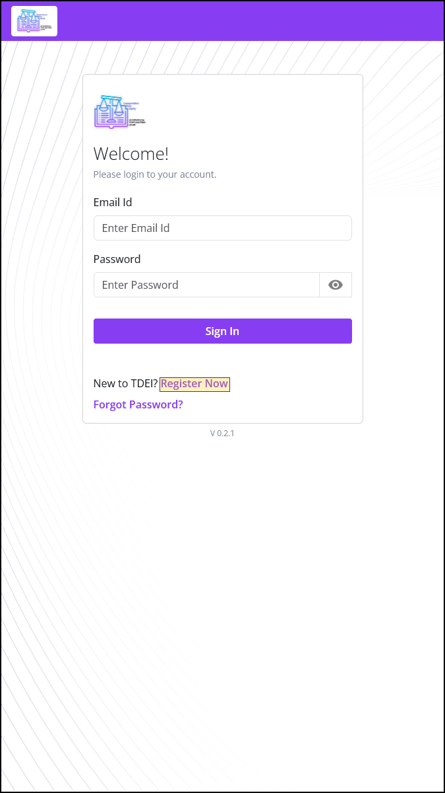
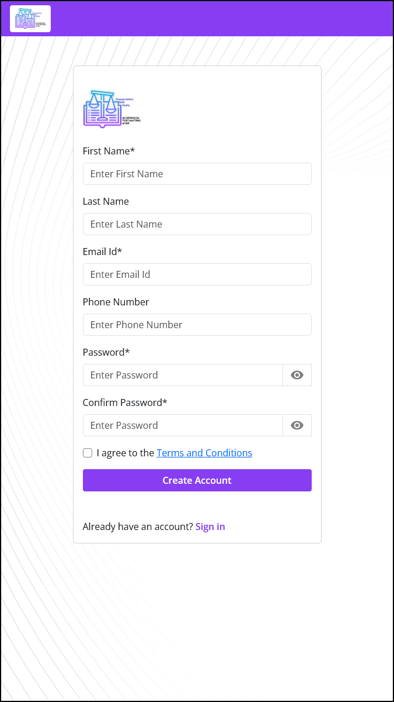

TDEI Portal Account Registration Guide¶
This guide explains how to register for a TDEI account using the TDEI Portal.
For a list of all guides on the TCAT Wiki, refer to the Guides List.
Step 1: Make sure you have reliable access to an Email account.
Step 2: Use this Email ID to register yourself in the TDEI system.
-
Visit https://portal.tdei.us/
-
Click "Register Now"
-
Complete the form and press "Create Account"
Password requirements: Minimum of 8 characters in length; requires at least one lower case letter, one upper case letter, one special character, and a number.
 